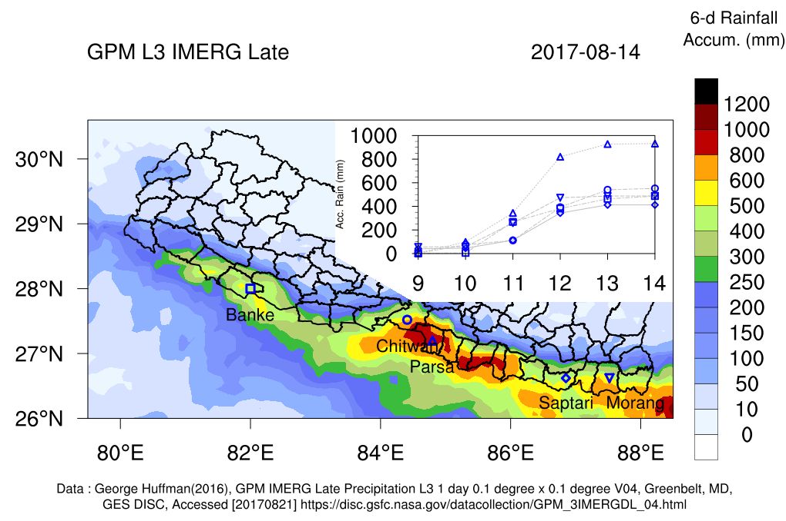

Mar 2019 ,
Prabhakar Shrestha
2017 Monsoon Flood, Terai (Nepal)
2017-08-29
Tweet

The 2017 Monsoon extreme rainfall in Nepal, triggered wide spread flooding in the Terai belt affecting the livelihoods of this densely populated region in Nepal. Loss and damage of human life and properties have been
reported or is still being assessed.
The above figure shows the 6 day accumulated rainfall over Nepal using later IMERG precipitation product from NASA. The time-series in the inset shows the cumulative rainfall over 5 districts also shown in the map. The calibrated rainfall estimates shows that most of the region in Terai Belt had rainfall in excess of 400 mm, with few districts even exceeding 800 mm. Most of the rainfall occurred during 11 and 12th August, triggering catastrophic flooding over this region. The availability of the Early and Late IMERG satellite precipitation which has a latency period of 6 hr and 18 hr respectively, along with couupled atmospheric-landsurface-groundwater numerical modeling are one of the best tools available to predict such flooding. Such tools with its uncertainty can still be used to make strategtic decisions to evacuate people, open the gates of barrages, prepare for relief measures etc.